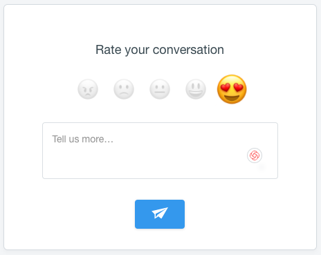

What’s the right support metric for your team? Every successful manager has a method. Andy Grove, former CEO of Intel and author of High Output Management, famously quipped, “What gets measured gets done.”
With the sheer volume of data available today, fast-moving organizations have almost too many support metrics to consider. CSAT, NPS, Customer Effort Score, First Reply Time - and that’s just the beginning!
How do you sort through these numbers to uncover the ‘pulse’ or ‘vibe’ of your customers, and your team? What’s the translation from data and insights into revenue growth, loyalty, and referrals?
To answer these questions, we turned to some of our favorite and most accomplished people in the industry. They dish on how they use metrics at companies such as Google, Basecamp, Hootsuite and 99designs – all in the post below.
Each of these leaders has crafted their own method for success, using a combination of metrics to help shape a high-functioning team and report their wins to the board. Check it out!
CSAT: The Happy Customer
Your Customer Satisfaction Score (CSAT) keeps track of your key people. Happy customers = loyal customers = revenue. The CSAT carries major weight in the overall measure of your service-based bottom line.
As Basecamp’s Kristin Aardsma knows firsthand, collecting accurate CSAT data can be as complex as it is valuable. Speaking to their in-house evaluation method, Kristin shares,
“This is a really tough one, it’s really tricky. [At Basecamp], we do have a survey – we call it Smiley, and customers can choose a happy face, a flatlined face, or a frowny fact. During their conversations with the team, they can choose one of those three emotions, or they can choose not to click anything at all. We look at those pretty regularly.”

Smiley survey via Basecamp
The trouble, Kristin notes, is that such a score simply isn’t hard science. Only 20% of Basecamp’s contacts actually choose to interact with the survey. Readings can prove inconsistent at best, and sample sizes often fail to represent the genuine customer experience. It’s just not a big enough sample to show whether the team is truly succeeding or not.
How do you know, then? Kristin notes that training – good, thorough training – is a huge part of building true confidence and knowing that your people are doing a good job.
“Our team is really amazing at being human and genuine. I want our team to be sincere. We train for that when someone starts…so, I measure success the same way that I would measure humanity or sincerity.”

CSAT survey via Intercom
At Hootsuite, Kirsty Traill also cites CSAT – it’s their customer support team’s number one metric.
“We have benchmarks, 97% for enterprise and 92% for self-serve. This is done through a survey sent after a support issue resolution. Once a support issue has been closed, the customer gets an email survey that asks the question: ‘How satisfied were you with the quality of service you received today?’
This is a great measure of the quality of the service the team gave, which has an impact on the customer’s desire to continue to do business with your company.”
This is a great measure of the quality of the service the team gave, which has an impact on the customer’s desire to continue to do business with your company.
At the end of the day, we know that the quality of service – whether measured in customer-specific surveys or simple smileys – hits home where it counts. Those companies who keep track of customer satisfaction position themselves to stay ahead.
At the same time, attempting to quantify emotion can prove imprecise at best. While these numbers present heavy value to companies, customers aren’t always eager to participate. Be mindful of your audience and reach out in thoughtful ways for the best impact.
QA (and metrics): The Service Scorecard
In addition to measuring raw service ticket output and CSAT scores on a monthly basis, former Senior Product Support Manager at Google Todd Zabel employs a QA scorecard for his entire team at Janrain.
The exercise measures his team’s performance and consistency, ensuring that every member offers customers top quality and presents an authentic and truly helpful experience.
You have to maintain an 85% compliance rate in that QA process every month in order to stay in good standing.
The Quality Assurance (QA) scorecard collects evaluations, rankings, and valuable feedback from every one of Todd’s team’s exchanges.
“I have a spreadsheet tool where I give everybody in the team a sample set of tickets from every other Tech Support Engineer. They’re anonymized, and the Tech Support Engineer who is reading them gives it a score based on a variety of dimensions. You have to maintain an 85% compliance rate in that QA process every month in order to stay in good standing.
It’s a peer-to-peer process. Every engineer is responsible for reading a set of tickets from every other engineer, and I then QA the QA. I spot check a subset of each one of those, and I give it back to the reviewers.”
Todd’s QA process – like any effective agent evaluation – helps to isolate and identify performance trends. Best of all, none of the scenarios are hypothetical: they’re based on real people and real reactions. The resulting scores from this method of testing provide the opportunity for focused coaching, as well as monitoring performance consistency for a department overall. Everyone wins, especially the customer
CES: Very Easy or Bust
In an often challenging world, ease of experience means more to a customer than overall satisfaction. Your Customer Effort Score focuses on the comfort and simplicity of a customer’s experience with your company: essentially, how hard is it to do business with you?
Make it quick and easy, and they’ll be coming back.
We use this score as it separates the support experience from the product experience. We then have a rolling average, and we track it across all conversations.
Steve Noone O’Connor, of point-of-sale service Vend, places serious focus on his CES. “Our customer effort score asks, “How easy was it for you to resolve your issue today?” We use this score as it separates the support experience from the product experience. We then have a rolling average, and we track it across all conversations.
Broadly, we look for correlations between people submitting tickets and churn rate. Currently, customers who submit tickets are less likely to churn.”
As a company, we want our work, our service, and our people to excel. Comfortable, easy exchanges build our most valuable human relationships, and the same rings true for customer service.
NPS: Get Them Talking
The NPS, or Net Promoter Score, can be called the simplest measure of customer loyalty. First introduced in 2003, this reach-focused KPI paints a picture of company performance from the customer perspective – specifically, the likelihood that said customer will independently recommend your services.
Example NPS survey via 99designs
Kirsty Traill notes that, “One of the biggest mistakes I see is people confusing NPS and CSAT. Anyone that tells me, ‘Oh, we have an NPS of 90’, usually what that means – unless they’re an Apple or a Zappos – is that they are sending a transactional survey after a support interaction, and what they are really measuring is customer satisfaction – not NPS.
You need to be able to differentiate between measuring that promoter with a “refer or recommend” question vs. measuring customer satisfaction. Both are important but quite different sets of data.”
Testimonial via Manly Bands
Get. Them. Talking. We’ve spoken to that word of mouth magic before: a referral from someone you trust carries a thousand times more value than a targeted advertisement, and the NPS score helps you track the likelihood – and ongoing generation – of those powerful moments.
Employee Engagement: Commit to the Culture
The health and happiness of employees is critical to the modern workplace – so much so that companies like Hitachi monitor it with live sensors. The Harvard Business Review tells us that over 70 percent of business owners cite employee engagement as a direct driver to their success.
At a more overarching level, as is widely understood in the industry, employee engagement is critical to delivering amazing customer experiences, so we measure our employee engagement as well.
Engaged employees show commitment, passion, and excitement about their work: they commit to the culture and their teams. As your company’s frontline ambassadors, they are absolutely essential.
“At a more overarching level, as is widely understood in the industry, employee engagement is critical to delivering amazing customer experiences, so we measure our employee engagement as well,” Kirsty Traill adds to her fundamental KPI’s.
Much like your CSAT or QA process, different teams respond better to different tools. Whatever method you may choose, the essential takeaway is to pay attention: people are your company’s most valuable resource.
First Response Time: The Early Bird Gets the Hype
It’s all about timing. Specifically, the First Response Time to a customer inquiry.
Hootsuite’s Kirsty explains, “There is a high correlation between the speed of response – not an automated bounce-back if you are talking about emails, but the first time the customer support team actually interacts with the customer – and customer satisfaction.
And it makes inherent sense – if you see a fast response, you are likely to be more predisposed to having a good quality experience.”
It makes inherent sense, if you see a fast response, you are likely to be more predisposed to having a good quality experience.
First Response Time is an essential factor in reducing frustration: it helps customers feel both valued and heard. In a world of customer support challenges, that’s always the foot we’d like to put forward.